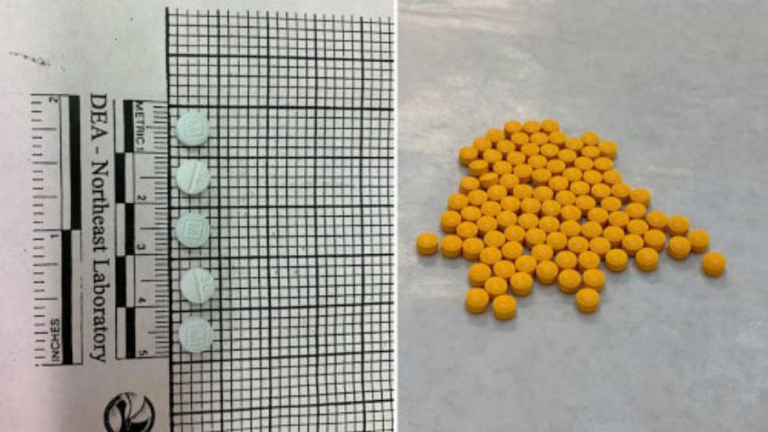
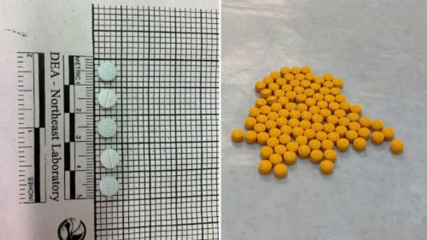

Counterfeit Oxycodone Vendor Sentenced to 13 Years in Prison
~2 min read | Published on 2019-11-23, tagged Counterfeits, Darkweb-Vendor, Drug-Bust, Drugs, Sentenced using 465 words.
One member of a drug manufacturing ring in Pennsylvania was sentenced to 156 months in prison for selling counterfeit oxycodone pills on the darkweb. The conspirators purchased kilogram quantities of fentanyl on the darkweb, created fake oxycodone pills with a pill press, and then resold the pills both locally and on the darkweb.
According to court documents 29-year-old Brett Trageser pleaded guilty to conspiracy to distribute and possess with intent distribute 400 grams or more of fentanyl between October 2015 and May 2017. Trageser reportedly played a major role in the distribution of fentanyl pills manufactured by the ring leader, 34-year-old Nathan Anthony Ott of Chambersburg, Pennsylvania.
At the beginning of the drug trafficking operation, Ott obtained kilogram quantities of fentanyl on the darkweb and used a manual pill press to make fentanyl pills. Ott then sold the fentanyl pills locally in Chambersburg. As the operation grew Ott recruited Trageser and the other members of the ring to help in distributing the pills. Unable to keep up with demand the ring reportedly purchased a motorized press capable of making 5,000 pills an hour. In March 2017 the ring moved the drug trafficking operation to an undisclosed darkweb marketplace and started distributing the pills throughout the US and other parts of the world. They used the United States Postal facilities in Chambersburg and surrounding areas to mail the drugs to their darkweb buyers.
The ring’s darkweb operation came to an end on May 10, 2017, when law enforcement raided Ott’s home. The raid led to the seizure of two pill presses, packaging and distribution materials, 18,000 fentanyl pills, and powder suspected to be fentanyl. The cops also seized computers and other electronic devices used to facilitate the distribution of the drugs. Ott, Trageser and their co-conspirators were subsequently arrested and charged.
On June 27, 2018, Ott was sentenced to 210 months in prison after he pleaded guilty in July 2017 to conspiring to distribute fentanyl in Chambersburg between October 2015 through May 2017. Ott was also ordered to forfeit $164,010 in cash and 19.7128804 in Bitcoin.
The other members of the ring pleaded guilty to conspiracy to distribute and possess with intent to distribute 400 grams or more of fentanyl and were sentenced as follows:
Apollo Ravanna Bey was sentenced to 21 in prison; Mike Wood was sentenced to 120 in prison; Cindy Jo Wood was sentenced to 48 in prison; Justin Chandler was sentenced to 120 in prison; Stephanie Holtry was sentenced to 48 in prison.
Trageser was the last defendant in the case and has been staying in the Cumberland County Prison in Carlisle, Pennsylvania. On November 7, 2019, Chief United States District Court Judge Christopher C. Conner sentenced him to 13 years in prison. The 13 years will be followed by five years of supervised release.
According to court documents 29-year-old Brett Trageser pleaded guilty to conspiracy to distribute and possess with intent distribute 400 grams or more of fentanyl between October 2015 and May 2017. Trageser reportedly played a major role in the distribution of fentanyl pills manufactured by the ring leader, 34-year-old Nathan Anthony Ott of Chambersburg, Pennsylvania.
Counterfeit Oxycodone Pills Seized by the DEA | DEA
At the beginning of the drug trafficking operation, Ott obtained kilogram quantities of fentanyl on the darkweb and used a manual pill press to make fentanyl pills. Ott then sold the fentanyl pills locally in Chambersburg. As the operation grew Ott recruited Trageser and the other members of the ring to help in distributing the pills. Unable to keep up with demand the ring reportedly purchased a motorized press capable of making 5,000 pills an hour. In March 2017 the ring moved the drug trafficking operation to an undisclosed darkweb marketplace and started distributing the pills throughout the US and other parts of the world. They used the United States Postal facilities in Chambersburg and surrounding areas to mail the drugs to their darkweb buyers.
The ring’s darkweb operation came to an end on May 10, 2017, when law enforcement raided Ott’s home. The raid led to the seizure of two pill presses, packaging and distribution materials, 18,000 fentanyl pills, and powder suspected to be fentanyl. The cops also seized computers and other electronic devices used to facilitate the distribution of the drugs. Ott, Trageser and their co-conspirators were subsequently arrested and charged.
On June 27, 2018, Ott was sentenced to 210 months in prison after he pleaded guilty in July 2017 to conspiring to distribute fentanyl in Chambersburg between October 2015 through May 2017. Ott was also ordered to forfeit $164,010 in cash and 19.7128804 in Bitcoin.
The other members of the ring pleaded guilty to conspiracy to distribute and possess with intent to distribute 400 grams or more of fentanyl and were sentenced as follows:
Trageser was the last defendant in the case and has been staying in the Cumberland County Prison in Carlisle, Pennsylvania. On November 7, 2019, Chief United States District Court Judge Christopher C. Conner sentenced him to 13 years in prison. The 13 years will be followed by five years of supervised release.